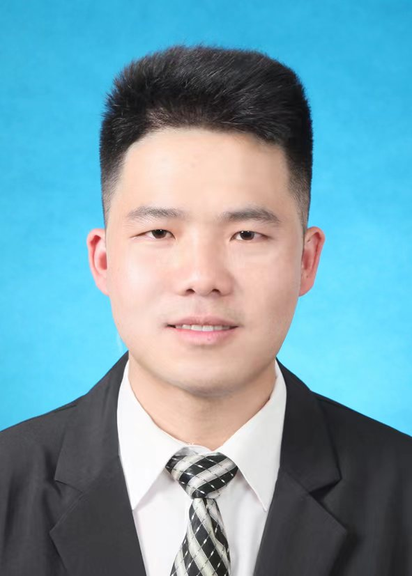
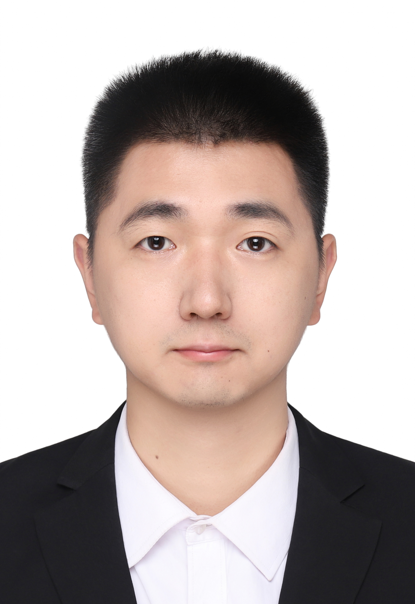

张志恒
博士，上海海事大学商船学院航海系讲师、硕士研究生导师，博士毕业于上海交通大学。主要研究船舶水动力分析、船舶运动建模与控制及智能航行。
PEOPLE & COLLABORATION

团队负责人
博士，现任上海海事大学商船学院航海系讲师、硕士研究生导师，博士毕业于大连海事大学。主要研究方向包括无人艇自主航行、通信受限协同控制、DoS攻击下韧性控制以及多智能体强化学习。
联系邮箱：zhanghg@shmtu.edu.cn

博士，上海海事大学商船学院航海系讲师、硕士研究生导师，博士毕业于上海交通大学。主要研究船舶水动力分析、船舶运动建模与控制及智能航行。
博士，上海海事大学商船学院航海系讲师，博士毕业于大连海事大学。主要研究船舶运动控制及无人船—无人机协同控制。
复杂海洋环境下的运动控制、路径跟踪与安全航行。
通信受限、网络攻击和不确定环境下的分布式协同。
强化学习、目标预测和安全约束控制方法。
CONTACT
欢迎围绕无人系统控制、海洋机器人与多智能体协同开展学术交流与合作。
招生信息计划招收交通信息工程及控制、载运工具运用工程、水路交通运输等相关专业硕士研究生。欢迎对智能船舶与海洋智能机器人研究感兴趣的同学加入我们。